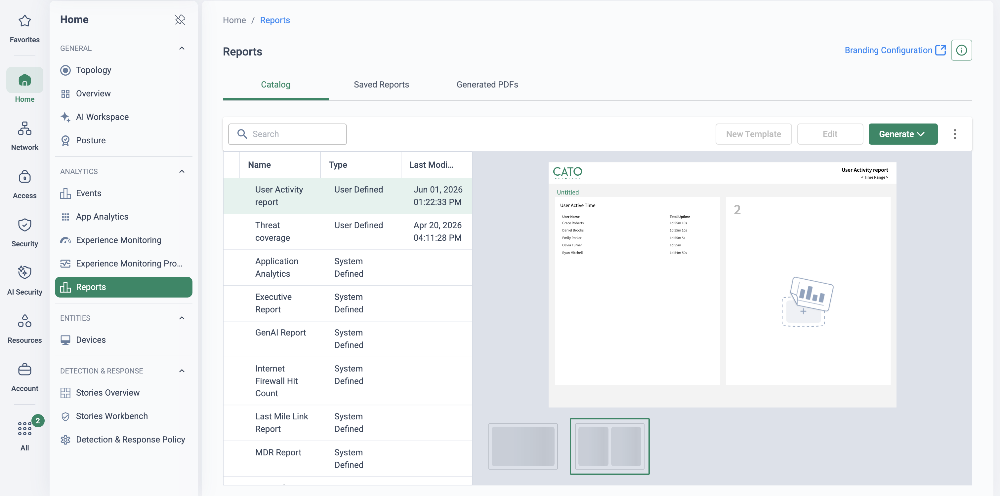

Turn evaluation into a decision
Every Cato PoV proves something different — failover for one customer, TLS inspection coverage for another, shadow-AI discovery for a third. What should never differ is the shape of the engagement. A well-run PoV has four fixed properties: a scope both sides agreed before anything was built, success criteria written down as measurable statements, a timeline with an end date, and evidence collected as it lands rather than reconstructed at the end. Remove any one of them and the evaluation drifts into an open-ended trial that consumes SE time and customer goodwill without ever producing a verdict.
The attached deck runs a visibility-led PoV: its eight business objectives and demo sequence are covered in Operational & Executive Visibility. This page extracts the reusable frame around that content — scope, criteria, cadence, wrap-up — so you can run the same engagement with any use-case bundle from this library.
How a PoV becomes a free trial
Four ways an evaluation loses its way — each one avoidable, and each one common:
No success criteria
Impressive demos, no decision. If nobody wrote down what "proven" means, the evaluation cannot converge — every session ends with "interesting, can we also look at…" and the goalposts move weekly.
Unscoped drift
"Can it also…?" is a compliment — and a trap. Every untracked ask stretches the timeline, and by the time the answer is yes, the sponsor has forgotten why the evaluation started.
No cadence
Weeks pass between contacts. Findings are reconstructed from memory at the end instead of recorded as they land, the champion goes quiet, and momentum dies exactly when the evidence was strongest.
No decision meeting
The trial licence expires and nobody was ever asked to decide. The strongest evidence in the world does nothing if there is no meeting on the calendar where it is put next to the success criteria.
"Before we switch anything on — what would you need to see proven, on your own traffic, for this evaluation to end in a decision? And who, besides you, has to see it?"
Five stages, one decision
The pipeline below is the whole method. Success criteria are agreed once, at the workshop, and travel with the PoV from that point on: the build exists to enable them, the test cycles exist to evidence them, and the wrap-up puts findings next to them. Anything raised mid-flight that is not on the register gets parked — visibly, respectfully, and in writing — in the next-steps register.
-
Scope & success criteria workshop
One structured session before anything is built. Ask what the customer must see proven — then push every answer until it is testable, and map each one to a use-case page in this library (the library is the menu; see choosing the PoV use cases below). "We want to see our traffic" becomes "App Analytics shows top applications by user for the pilot site". Output: a list of success criteria, each with a measurement and a named owner on the customer side.
-
Environment & prerequisites
Agree the footprint: which sites and users are in scope (typically one branch socket plus a pilot group of remote users), which licences or trials are needed, and the two enablers that most often gate the timeline — TLS inspection where content-level proof is required (see TLS Inspection: Staged Rollout Playbook) and identity integration (see Identity Integration Design), because identity-attributed evidence is the difference between "an IP did this" and "Priya did this".
Prerequisites gate the timeline — agree before week 1- Trial licences confirmed for every capability under test.
- TLSi scope and exclusions approved by whoever owns privacy — before traffic is inspected, not after.
- IdP integration connected and the pilot group syncing.
- Change windows booked for connecting the pilot site.
-
The test-case register
Every success criterion becomes a row: what we test, how important it is, how it is measured, and where it stands. This is the single artefact the whole PoV runs on — reviewed at every sync, read out at the wrap-up. A worked sample:
Use case What we test Priority Measurement / evidence Status Branch SD-WAN resilience Pull the primary link on the pilot socket mid-call Must prove Voice call continues; Socket metrics record the switch to the secondary link Passed — wk 2 Global app performance UK ↔ Dubai transfer over the backbone vs today's path Must prove Side-by-side transfer times; PoP-to-PoP latency from Topology In progress Threat prevention IPS & anti-malware on pilot-site traffic, monitor first Must prove Test threat blocked; event attributed to user and device in Events Scheduled — wk 3 Remote-user ZTNA Pilot group works a full week through the Cato Client Should prove Experience Monitoring stats; no helpdesk tickets from the group In progress Shadow AI discovery AI app inventory on real traffic, monitor mode only Nice to have Discovery inventory and GenAI report export Scheduled — wk 3 CASB tenant control Raised in week 2 — not in the agreed scope — — Parked — next-steps register -
Weekly cadence
A 30-minute sync, same slot every week. Walk the register top to bottom, update statuses live on screen, and record findings as they land — a screenshot, an event export or a metric into the shared evidence doc, dated, against its criterion. New asks are triaged in the meeting: onto the register (with a criterion and a trade-off) or into the next-steps register. Evidence recorded weekly is what makes the wrap-up a formality rather than an archaeology project.
-
Wrap-up & the decision meeting
One page: findings against success criteria, pass by pass. Present it in a meeting booked at the workshop — with the economic buyer in the room, not just the technical champion. If a criterion failed, say so plainly; credibility is the product. The next-steps register — every parked ask — becomes the expansion roadmap, and for most engagements the natural next page is Migration Methodology & Co-existence Patterns.

Home → Reports (demo tenant, fictional identities): the catalogue the wrap-up pack draws on — Executive, Application Analytics, GenAI and firewall hit-count templates, each a dated PDF one Generate click away.
Decision by design
The timeline ends in a meeting where the question is actually asked — a verdict is scheduled, not hoped for.
Evidence, not opinion
Every claim in the wrap-up has a dated screenshot, event or metric behind it, gathered while it happened.
Scope discipline
New asks are honoured by parking them in writing — the customer feels heard and the PoV keeps its end date.
Repeatable by any SE
The same frame fits any use-case bundle — a new SE can run week one straight from this page.
The library is the menu
Pick a small bundle — four to six use cases, of which only two or three are "must prove" — and take the success criteria straight from the relevant library pages, each of which carries its own demo runbook and evidence points. Three example bundles:
Network PoV
Typical criteria: link failover with voice continuity, global transfer times over the backbone, per-app QoS.
Security PoV
Typical criteria: threat verdicts attributed to identity, one policy plane across sites and users, inspection coverage.
AI visibility assessment
A fully packaged instance of this framework: fixed four-week scope, monitor mode only, weekly 30-minute syncs and a defined report deliverable. Copy its shape when packaging your own.
Whatever the bundle, visibility is the evidence layer every PoV leans on — the eight visibility objectives, their business outcomes and the console demo sequence are on Operational & Executive Visibility. Use that page for the content of a visibility-led PoV; use this one for the frame around it.
Where this sits in the Cato SASE platform
- Scope workshop: success criteria are agreed and written down before anything is built.
- Build the pilot: one branch Socket plus a pilot group on the Cato Client, with the IdP syncing.
- Test cycles work the register on the pilot’s own traffic; evidence is recorded weekly as it lands.
- The wrap-up puts findings next to the criteria in a decision meeting booked at the workshop.
How the SE runs week one
-
Do the homework before the workshop
From discovery notes, shortlist candidate use-case pages from this library and pre-draft a success criterion for each. The workshop then edits a straw man instead of staring at a blank whiteboard — and you control the altitude of the conversation.
-
Run the scope workshop
For every ask, push until it is measurable, and agree what is explicitly out of scope — writing things out is as valuable as writing things in. Close by booking two meetings on the spot: the weekly sync slot and the wrap-up/decision meeting with the economic buyer.
-
Build the pilot
Network → Sites Access → Users
Connect the pilot branch socket, enrol the pilot group on the Cato Client, and confirm the IdP sync is populating users and groups. Work through the prerequisites callout above — licences, TLSi approvals, change windows — before the first test cycle is due.
-
Capture evidence item zero
Monitor → Topology
On the day the pilot connects, take the baseline: tunnels up, link quality to the nearest PoP, first traffic flowing. Dated screenshots into the evidence doc — the week-one sync opens with proof the environment is real, which sets the tone for everything after.
-
Hold the first weekly sync
Monitor → App Analytics
Thirty minutes: register top to bottom, statuses updated live, findings recorded in the meeting. Land one quick win on their own traffic — App Analytics for the pilot site is the reliable opener, because seeing their applications and users named on screen makes the PoV feel real on day five, not day thirty.

What the quick win looks like (demo tenant, fictional identities): named users, their applications and the volume, on one screen. Filter to the pilot site at the sync. -
Guard the scope from day one
The first "can it also…?" usually arrives in week one. Park it in the next-steps register on screen, in the meeting — the customer sees it captured, not dismissed. If it is genuinely must-prove, trade it in explicitly: add a criterion with an owner and a measurement, and agree what drops or how the timeline moves.